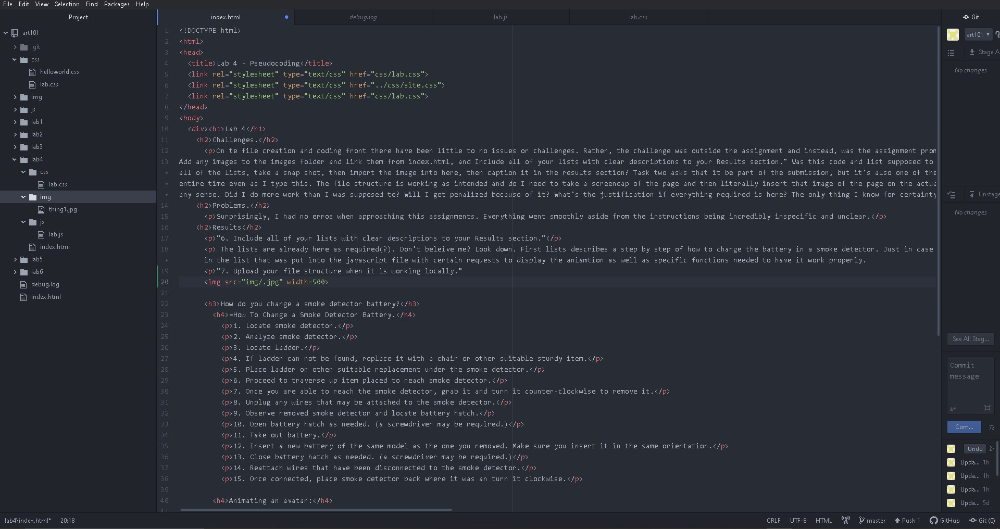

On te file creation and coding front there have been little to no issues or challenges. Rather, the challenge was outside the assignment and instead, was the assignment prompt itself. To elaborate. Task 1 asks te student to pseudocode an everyday task and include it in the html file. However in task 4, it states "Add your lists to your index.html, Add any images to the images folder and link them from index.html, and Include all of your lists with clear descriptions to your Results section." Was this code and list supposed to be done seperately? Why would I need images imported on te page you're literally looking at? The task said to implement it into HTML so was it just an image of the list in HTML or is it literally putting it in HTML? What is there to caption if there are no images? Was I supposed to create a seperate document with all of the lists, take a snap shot, then import the image into here, then caption it in the results section? Task two asks that it be part of the submission, but it's also one of the lists included in the HTML, which task 4 instructed to do. Same goes for task 3. Another list but it is in javascript. No issue there, but then it wants it in the HTML file. Done. The HTML file is what I am submitting though as task four asks to create an index.html file, which is what I have been working in the entire time even as I type this. The file structure is working as intended and do I need to take a screencap of the page and then literally insert that image of the page on the actual page? Take a picture of the lists, then upload the image to the site where the image is placed above the lists you just took a picture of. This is idiocy, that's like if I took a screen cap of my facebook post, then uploaded that screen cap to a facebook post to prove I made a facbook post. Brock, this doesnt make any sense. Did I do more work than I was supposed to? Will I get penalized because of it? What's the justification if everything required is here? The only thing I know for certainty is that I made a minor style sheet, otherwise you couldn't see the colors of the texts. Much of this stuff is self-evident and that just makes it more confusing than it needs to be.
Surprisingly, I had no erros when approaching this assignments. Everything went smoothly aside from the instructions being incredibly inspecific and unclear.
"6. Include all of your lists with clear descriptions to your Results section."
The lists are already here as required(?). Don't beleive me? Look down. First lists describes a step by step of how to change the battery in a smoke detector. Just in case that wasn't evident enough. The second list is more of a checklist of things that need to be considered when animating an avatar (either 2D or 3D). Although implied that the avatar needs to be created, that would need a seperate list entirely so just the process and specifics of what to do was put in. The last list in the list that was put into the javascript file with certain requests to display the aniamtion as well as specific functions needed to have it work properly.
"7. Upload your file structure when it is working locally."
"Take a screenshot of your final published Lab 4 page"
You're literally looking at it but okay.
1. Locate smoke detector.
2. Analyze smoke detector.
3. Locate ladder.
4. If ladder can not be found, replace it with a chair or other suitable sturdy item.
5. Place ladder or other suitable replacement under the smoke detector.
6. Proceed to traverse up item placed to reach smoke detector.
7. Once you are able to reach the smoke detector, grab it and turn it counter-clockwise to remove it.
8. Unplug any wires that may be attached to the smoke detector.
9. Observe removed smoke detector and locate battery hatch.
10. Open battery hatch as needed. (a screwdriver may be required.)
11. Take out battery.
12. Insert a new battery of the same model as the one you removed. Make sure you insert it in the same orientation.
13. Close battery hatch as needed. (a screwdriver may be required.)
14. Reattach wires that have been disconnected to the smoke detector.
15. Once connected, place smoke detector back where it was an turn it clockwise.
1. Locate joints that can be manipulated.
2. Select joints.
3. Use either the rotation or move tools to move part of the avatar.
4. Move part to desired coordinates.
5. Set a keyframe to lock it into position.
6. Scrub or scroll through animation to assess quality.
7. Repeat process from step 1.
//Create timeline in frames-per-second.
//determine how many frames per second will be used and for how long.
//Create joints on the rigged avatar.
//Create rigged joints or point selections.
//Research how to set certain pixels to be selectors.
//Set functions for move and rotate tools.
//Insert x, y,and z cooridantes to determine destination of joint.
//Once at destination, note again the cooridinates and save destination in timeline.
//Scrub or scroll through current animation
//If any inconsistencies, refer back to the x, y, and z coordinates.
//Loop through animation.
//Beginning from first keyframe.
//Make loop indefinite.